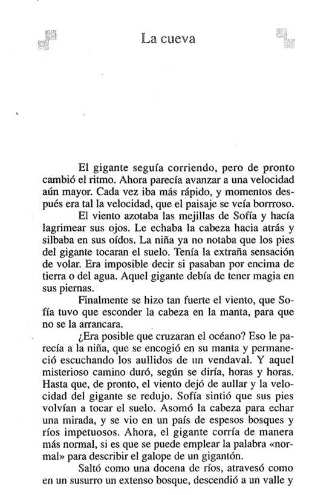
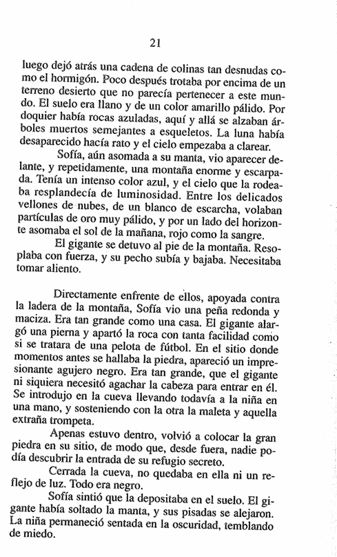
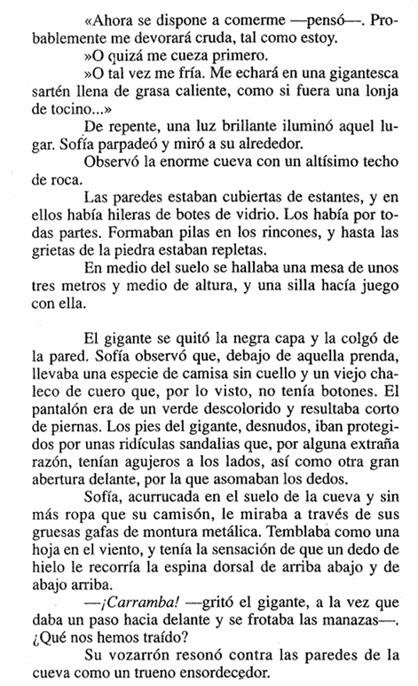

"La cueva" — Capítulo 4 (Sofía llega a la cueva del gigante)
Nombre:Curso:Fecha:
Lectura del capítulo
Lee con atención las páginas 20, 21 y 22 antes de responder.

Página 20

Página 21

Página 22
I. Comprensión lectora (alternativas)
Marca la alternativa correcta. Al hacer clic verás si acertaste y una breve explicación.
Pregunta 16Comprensión literal
Mientras el gigante corría a toda velocidad, ¿qué extraña sensación experimentaba Sofía?
A) La sensación de estar cayendo a un pozo profundo.
B) La sensación de volar, pues no notaba que los pies del gigante tocaran el suelo.
C) La sensación de tener mucho sueño y ganas de dormir.
D) La sensación de estar dando vueltas sin avanzar.
Alternativa B. El viento la envolvía y Sofía tenía la extraña sensación de volar, porque no notaba que los pies del gigante tocaran el suelo; incluso era imposible saber si pasaban por encima de tierra o de agua.
Pregunta 17Comprensión literal
¿Cómo logró el gigante abrir la entrada de su cueva?
A) Cavó un túnel en la tierra con sus enormes manos.
B) Empujó una gran puerta de madera escondida entre los árboles.
C) Apartó con la pierna una peña enorme, tan grande como una casa, con la facilidad de una pelota de fútbol.
D) Pronunció unas palabras mágicas para que la roca desapareciera.
Alternativa C. Frente a la ladera había una peña redonda y maciza, grande como una casa. El gigante alargó una pierna y la apartó con tanta facilidad como si fuera una pelota de fútbol, dejando al descubierto un enorme agujero negro.
Pregunta 18Análisis narrativo
El texto dice que la peña era "tan grande como una casa" y que el gigante la movió "como si fuera una pelota de fútbol". ¿Qué logra el autor con estas comparaciones?
A) Mostrar que la roca en realidad era muy liviana y hueca.
B) Resaltar la descomunal fuerza del gigante, capaz de mover algo enorme con total facilidad.
C) Explicar que al gigante le gustaba mucho jugar al fútbol.
D) Indicar que la cueva era en verdad muy pequeña.
Alternativa B. Al contrastar el tamaño de la peña (una casa) con la facilidad del gesto (una pelota de fútbol), el autor exagera para que el lector perciba la fuerza descomunal del gigante.
Pregunta 19Inferencia
Al quedar todo a oscuras, Sofía imagina que el gigante la devorará cruda, o que la cocerá o la freirá en una sartén. ¿Qué revela ese pensamiento sobre ella?
A) Que Sofía tenía mucha hambre en ese momento.
B) Que Sofía confiaba plenamente en las buenas intenciones del gigante.
C) Que Sofía estaba aterrorizada y temía que el gigante quisiera comérsela.
D) Que a Sofía le encantaba cocinar y pensaba en recetas.
Alternativa C. En plena oscuridad, la imaginación de Sofía se llena de imágenes de ser devorada; esos pensamientos muestran el pánico y la indefensión que siente al estar atrapada.
Pregunta 20Comprensión literal
Cuando una luz brillante iluminó la cueva, ¿qué vio Sofía cubriendo las paredes?
A) Armas y espadas colgadas de ganchos.
B) Estantes repletos de hileras de botes de vidrio, por todas partes.
C) Retratos y pinturas de otros gigantes.
D) Grandes montañas de huesos amontonados.
Alternativa B. Las paredes estaban cubiertas de estantes con hileras de botes de vidrio; los había por todas partes, formando pilas en los rincones e incluso metidos en las grietas de la piedra.
II. Vocabulario en contexto
Elige el significado que tienen estas palabras según cómo aparecen en el capítulo.
Vocabulario 1
Al asomar la cabeza, Sofía se vio en un país de espesos bosques y ríos "impetuosos". ¿Qué significa esa palabra?
A) Tranquilos y de aguas quietas.
B) Que se mueven con mucha fuerza y violencia.
C) Muy pequeños y casi secos.
D) De aguas heladas y cristalinas.
Alternativa B. "Impetuoso" describe algo que se mueve con gran fuerza y rapidez; un río impetuoso arrastra sus aguas con violencia.
Vocabulario 2
La montaña que ve Sofía se describe como enorme y "escarpada". ¿Qué quiere decir "escarpada"?
A) De laderas muy empinadas y difíciles de subir.
B) Cubierta de nieve por todos lados.
C) Redonda, baja y de pendientes suaves.
D) Llena de árboles y vegetación.
Alternativa A. Una montaña "escarpada" tiene pendientes muy pronunciadas y abruptas, difíciles de escalar.
Vocabulario 3
Al detenerse al pie de la montaña, el gigante "resoplaba" con fuerza. ¿Qué significa "resoplar"?
A) Cantar en voz muy baja.
B) Respirar de forma ruidosa y agitada, por el cansancio.
C) Quedarse dormido de pie.
D) Reír a carcajadas.
Alternativa B. "Resoplar" es echar el aire con fuerza y ruido, como cuando alguien está muy cansado y necesita recuperar el aliento; por eso su pecho subía y bajaba.
Vocabulario 4
Cuando el gigante grita, el texto dice que su "vozarrón" resonó como un trueno. ¿Qué es un "vozarrón"?
A) Una voz muy suave y dulce.
B) Una voz muy fuerte y potente; la terminación "-arrón" aumenta la palabra.
C) Un susurro apenas audible.
D) Una voz temblorosa por el miedo.
Alternativa B. "Vozarrón" es un aumentativo de "voz": la terminación "-arrón" indica una voz enorme y retumbante, que resuena como un trueno.
III. Respuesta abierta
Escribe con tus palabras. Usa detalles del texto para fundamentar tu respuesta.
Pregunta 7Interpretación y pensamiento crítico
Durante el viaje, Sofía tuvo "la extraña sensación de volar" y no podía saber si pasaban por encima de
tierra o de agua; luego el gigante la encerró en una cueva oscura sin decirle nada. ¿Cómo crees que se
sentía Sofía al no saber a dónde la llevaban ni qué le iba a pasar? Explica tu respuesta apoyándote en
algún detalle del texto.
Creo que se sentía muy asustada e indefensa, porque no
controlaba nada de lo que ocurría y su imaginación
llenaba de miedo lo desconocido, como al pensar que la comerían.
Pregunta 8Interpretación y pensamiento crítico
Al final del fragmento, el gigante grita "¡Caramba! ¿Qué nos hemos traído?" con una voz como un trueno,
y Sofía tiembla como una hoja, sintiendo un dedo de hielo recorrerle la espalda. Si tú hubieras estado
en el lugar de Sofía al escuchar esa voz, ¿qué habrías hecho o pensado? Fundamenta tu respuesta usando
algún detalle de la escena.
Yo también habría temblado de miedo, pero intentaría
quedarme muy quieta y observar al gigante para descubrir
si era peligroso antes de decidir qué hacer o decir.
El Gran Gigante Bonachón — Roald Dahl · Capítulo 4: "La cueva" · Guía de Comprensión Lectora